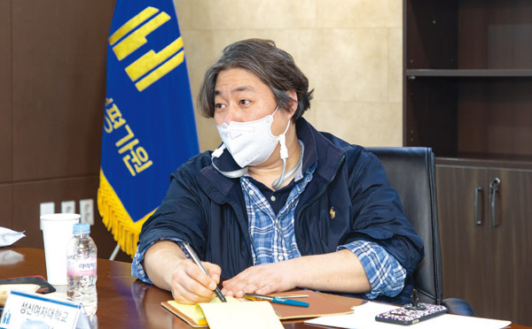
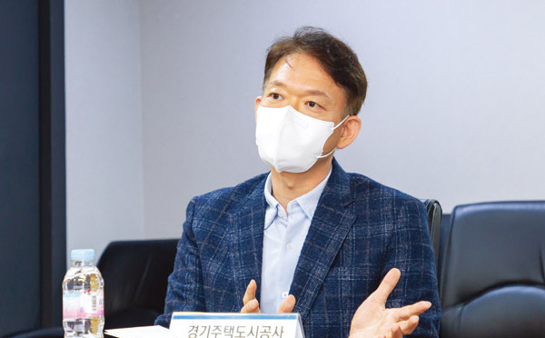

안전을 중시하는 조직문화를 형성해나가는 계기 마련

권오성
성신여대 법학과 교수
중대재해처벌법은 산업안전·보건의 비정상적 상황을 정상화하는 출발점이라고 생각한다.
조흠학
인제대 보건안전공학과 교수
중대재해처벌법 시행, 안전이 포함되는 공익을 추구해야 공기업의 목적을 달성할 수 있다는 것을 인식하는 계기
정영훈
한국노동연구원 사회정책연구본부 연구위원
안전보건공단에서 제공하는 조치와 계획만 잘 이행해도 중대재해처벌법 제4조, 제5조, 제9조의 의무를 어떻게 이행해야 하는지에 관한 어려움은 해소될 것
박상하
서울시설공단 안전처 중대재해예방팀장
법률의 일부 내용이 불명확하거나 해석이 모호한 부분이 있어 이를 명확히 하는 세부적인 법 보완이 필요

전경철
경기주택도시공사 안전품질단 안전운영부장
입찰부터 안전관리가 우수한 시공사를 선정할 수 있는 입찰 방법의 개선이 필요
송병기
용인도시공사 기획조정실 안전정보팀장
관리자의 관심도에 따라 안전 관련 예산확보 기준에 대한 편차가 있어 이에 따른 지침 필요
장호진
지방공기업평가원 경영지원단 경영지원TF팀 연구위원
지방공공기관의 중대재해처벌법에 따른 안전 및 보건 확보의무를 적절히 이행하고 있는지 점검할 수 있는 컨설팅 준비중
Chapter 01.
지방공공기관에게 중대재해처벌법의 의미는?
“지방공기업의 장, 안전·보건 확보 의무의 경영책임자”
중대재해처벌법은 ‘경영책임자’가 안전·보건 확보 의무의 주체이자 형사처벌 대상임을 명시하고 있다. 지방공공기관에도 적용되기에 산재사고로 인한 근로자 사망, 지역주민의 사망 등 중대재해가 발생하면 ‘기관장’이 형사처벌을 받을 수 있다. 하지만 전문가들은 중대재해처벌법의 목적과 의의는 경영책임자에 대한 직접적인 처벌보다는 현장의 유해·위험요인에 대한 안전·보건관리를 철저히 이행하는 ‘예방’에 있다고 강조한다. 기관장이 안전·보건에 대한 확고한 리더십을 발휘하여 안전을 중시하는 조직문화를 형성해나가는 것이 무엇보다 중요하다고 강조했다.
장호진
중대재해처벌법의 핵심은 ‘경영책임자’를 중심으로 안전·보건 관리체계를 구축·이행하는 것이라고 할 수 있다. 과거 지방공공기관의 각종 사업과 관련하여 사망사고가 지속적으로 발생했다. 중대재해처벌법의 제정 이유가 되었던 구의역 사고 등이 대표적이다. 이에 지방공공기관의 안전·보건 확보 의무는 중대재해처벌법의 시행을 계기로 더욱 중요해지고 강화할 필요가 있다. 이는 근로자뿐만 아니라 지역주민 모두를 위한 것이다.
권오성
산업재해로 인한 사상(死傷)이 발생하면 산업안전보건법 위반에 관해선 근로감독관이, 형법상의 업무상 과실치사상죄에 관해선 경찰이 초기 수사를 진행했다. 이런 수사를 거쳐 검찰이 상상적 경합 또는 실체적 경합으로 하나의 공소(公訴)를 제기하면, 법원에서 산업안전보건법 위반과 업무상 과실치사죄에 대해 판결했다. 그러나 이들 범죄에 대해 징역형이 선고되는 경우에도 집행유예가 대부분이었고, 법인 사업주 경우에는 벌금형 선고만이 가능한데 벌금액도 천만 원을 넘지 않는 경우가 많았다. 이 때문에 산업안전보건법 위반에 대한 기존의 형사제재만으로는, 특히 법인에 대해선 범죄억지력을 기대하기 어렵다는 비판이 있었다. 중대재해처벌법은 법인의 범죄능력을 긍정해 법인 사업주를 직접 처벌하는 방식이 아니라, 법인사업주를 대표하고 그 사업을 총괄하는 자를 ‘경영책임자’ 등으로 규정하고, 경영책임자 등에게 직접 안전·보건 확보 의무를 부과하고 있는 것이다.
조흠학
공기업은 합리적인 공익을 우선으로 하는 기업이라고 본다. 그 공익 속에는 국민의 ‘안전’도 포함돼 있음에도 그동안 간과한 측면이 있었다. 따라서 중대재해처벌법 시행을 기회로 안전도 포함되는 공익을 추구해야 공기업의 목적을 달성할 수 있다는 것을 모두가 인식하는 계기가 됐다. 무엇보다 이 법은 사전에 재해를 방지한다는 넓은 틀에서 사업장 및 일반시민까지 보호하기 위하여 경영책임자에게 더욱더 명확하고 강력한 책임을 부과한다는 점에서 의미가 있다.
정영훈
중대재해처벌법은 중대재해가 발생하지 않도록 사업주와 경영책임자 등이 최선의 노력을 다할 것을 강제하고 있다는 점이 핵심이다. 중대재해 방지는 최고경영책임자의 자격과 노력이 무엇보다도 중요하다는 점에서 민간 부문과 공공 부문 모두에 있어 중대재해를 예방하는 데 획기적인 의의가 있을 것으로 기대한다. 중대재해처벌법 이전에도 공공 부문에서는 ‘공공기관 발주자 안전·보건관리 가이드라인’(고용노동부), ‘지방공공기관 안전·보건관리 가이드라인’(행안부), ‘공공기관의 안전·관리에 관한 지침’(기재부)에 따라 재해 예방을 위해 민간 부분 사업장보다 훨씬 높은 수준의 안전·보건관리 조치를 취해 왔다. 이들 조치가 중대재해처벌법 제4조 및 제5조, 제9조에 의해서 지방공공기관장의 법적인 의무로서 규정됐다. 지방공공기관장의 의무이행의 법적 강제력과 동기가 강화됐기 때문에 지방공공기관의 지배 영역에서 발생하는 재해를 방지하는 데에 보다 나은 효과를 발휘할 것으로 기대한다.
권오성
중대재해처벌법은 사기업 이외에 지방공기업법에 따른 ‘지방공기업의 장’을 경영책임자로 규정해 공기업의 운영에 안전과 보건의 가치를 강화할 것을 요구하고 있다. 서울올림픽이 열린 1988년 온도계 생산공장에서 일하던 문송면 군(15세)이 수은중독으로 사망해 사회적으로 큰 주목을 받았다. 사망 이후 34년이 지났지만 현실은 크게 달라지지 않았다. 기업은 경영상 이익을 자신의 것으로 다 가져가면서도 안전사고에 따른 비용은 사회에 전가해왔다. 중대재해처벌법의 시행은 이러한 비정상적인 상황을 정상화하는 출발점이라고 생각한다.
정영훈
고용노동부, 행안부 등의 가이드라인이 있었음에도 지자체와 지방공공기관은 예산, 인사상 제약을 이유로 준수하는 데에 어려움이 있었다. 중대재해처벌법의 계기로 안전·보건을 위한 예산 및 인력을 확충할 수 있을 것으로 기대한다. 지방공공기관의 기관장은 선도적으로 이러한 노력을 다하는 것이 무엇인지를 직접 보여줌으로써 중대재해처벌법이 소기의 목적을 달성할 수 있도록 기여해야 한다.
Chapter 02.
안전·보건관리 체계 구축을 위한 노력들
중대재해 ZERO 선포, 위험작업 거부, 안전·보건 전담조직 구성 등
중대재해처벌법을 계기로 각 기관들은 기존 시스템을 보완하거나 더욱더 효과적인 대응체계를 구축해나가고 있다. 용인도시공사는 사업장별 위험요소 사전발굴, 안전경영위원회 운영내규 제정, 초기대응 구축 계획 수립, 모의훈련, 중대재해 제로 선포식 등을 실시했다. 서울시설공단은 ‘위험작업거부권’을 전면 실시했고, ‘노동안전보건위원회’ 구성, ‘일일안전브리핑’과 ‘위험요인 및 아차사고 신고포상제’ 등의 제도를 신설하고 강화했다. 경기주택도시공사는 전담조직을 사장 직속으로 조직을 개편함과 동시에 관련 규정 제·개정 등으로 안전·보건 관리체계를 구축하고 있다.
송병기
용인도시공사는 ISO45001(안전보건경영시스템) 인증과 ISO22301(업무연속성경영시스템) 인증, 행안부의 재해경감우수기업 인증을 통한 체계적인 안전보건경영 시스템을 구축하고 있다. 세부적으로 지난해 현장 모의훈련을 실시해 안전사고 발생 시 신속한 조치 및 대응체계를 수립했다. 이어 안전경영위원회 시행내규를 제정했고, 안전·보건 관리 강화를 위해 인력도 보강했다. 또한 안전·보건 관리담당자 역량교육을 강화해 정기 안전점검과 효율적인 시설물 관리로 중대재해가 발생하지 않도록 노력하고 있다. 특히 중대재해 제로 선포식을 실시해 안전·보건 관리감독자들이 경각심을 갖도록 했다. 안전신고센터를 운영함으로써 시설 내 위험요소나 시설물의 개선사항 등에 대한 시민들의 자발적인 제보를 통해 안전사고를 예방할 수 있도록 했다.
전경철
경기주택도시공사는 안전·보건 전담조직을 사장 직속으로 배치했으며, 안전·보건관리계획 수립, 안전·보건 관리규정 및 시행세칙 제정, 안전보건경영시스템(KOSHA-MS) 전환 등 안전·보건 관리체계를 구축했다. 또한 건설현장의 안전관리 개선을 위해 전체를 대상으로 월 1회 안전 컨설팅을 진행하고 있고, 현장감독자 등을 대상으로 발주자의 안전 역량 강화교육 및 지방공기업 최초로 안전계약특수조건을 제정하는 등 중대재해 제로화를 위해 노력하고 있다.
박상하
서울시설공단도 안전·보건에 관한 업무를 총괄 관리하는 전담조직을 신설했고, 특히 ‘위험작업거부권’을 도입했다. 지난해 초부터 중대재해 안전체계 TF를 구성해 사고사례 분석을 통한 ‘중대재해사고 혁신방안’ 등을 도출하고 있다. 이외에도 공사 관행 개선을 통한 안전사고 저감 추진, ‘위험요인 및 아차사고 신고포상제’ 등을 진행하고 있고, 우수사례 공유 및 직원에게 인센티브를 제공하는 ‘열린 위험요인 소통센터’도 운영하고 있다.
Chapter 03.
예산·전문인력 등 한계, 체계 구축의 실무적 어려움
‘실질적으로 지배·운영·관리하는 책임’의 명확화 필요
중대재해처벌법 시행으로 공공기관들도 비상이 걸렸다는 보도를 심심찮게 볼 수 있고, 이에 대한 준비과정에서 예방이라는 선제적 대응보다는 처벌을 회피하는 ‘사후약방문(死後藥方文)’식 대책에만 고심하는 기관이 있다는 비판도 있다. 전문가들은 중대재해가 발생했을 때 경영책임자가 무조건 처벌받는 게 아니라 안전·보건 관리체계 구축 등 안전·보건을 확보하기 위한 제반 의무를 이행했다면 재해가 발생하더라도 처벌되지 않는다고 설명한다.
송병기
법률 시행 초기이고 안전·보건 확보 의무 이행기준이 아직까진 명확하지 않아서 담당자들은 안전 관련 문서의 체계화 등에도 많은 시간을 소비하고 있는 것도 현실이다. 또한 타 기관의 사례를 살펴보아도 기관장 또는 지자체의 담당 부서의 관심도에 따라 안전 관련 예산확보 기준에 대한 편차가 있어 이에 따른 지침이 필요할 것으로 보인다. 특히 공사가 관리하는 시설 및 현장 등이 다수 존재해 안전·보건 점검 및 관리업무에 관한 시간 소요가 늘어나고 있지만 기타 업무 등으로 인해 시간을 할애하는 것도 힘든 상황이다.
전경철
아직도 인식이 부족한 일부 건설사의 경우, 안전관리는 현장의 안전관리자만의 업무로 국한하는 경우가 있다. 중대재해처벌법 시행 초기인 만큼 관련 사례나 판례가 부족해 구체적인 업무계획을 수립하기 어려운 부분도 있다. 무엇보다 안전관리 담당 직원의 배치가 충분해야 하는데 인력이 부족한 게 현실이다.
박상하
법률의 일부 내용이 불명확하거나 해석이 모호한 부분이 있어 이를 세부적으로 명확하게 하는 등 법의 보완이 필요하다고 본다. 구체적으로는 ‘공사적격심사기준’에서 업체의 안전·보건 확보 정도에 따라 평가·선정이 가능하도록 관련 적격심사 기준을 개정하는 것이 필요하다. 또 안전·보건 관계법령에 따른 의무이행 점검을 중앙행정기관의 장이 지정한 기관 등에 위탁해 점검하는 경우에 대한 기준을 마련하는 것이 필요한데, 위탁 점검업체 선정방법, 위탁점검비 산정방법, 위탁점검 내용 등의 상세 기준이 마련돼야 한다고 본다. 또한 법률상의 ‘실질적으로 지배·운영·관리하는 책임’의 구체적인 의미를 명확화할 필요가 있다. 예컨대, 공단에서 관리 중인 공중이용시설의 유지보수공사를 발주·감독한 경우, 실질적인 지배·운영·관리를 하는가의 판단이 모호하다. 공사 및 용역의 경우에도 대부분 공단이 관리하는 시설물 내에서 이뤄지는 유지보수공사 및 시설물 점검 사항으로, 공단에서 기술력이나 장비를 보유하고 있지 않아 직접 시행할 수 없어 전문 건설공사 면허를 보유한 공사 및 전문 점검업체에서 도급·시행하고 있다. 이러한 경우에도 단지 시설물 관리의 주체라고 해서 그 공사 및 점검 과업을 지배한다고 할 수 있는지 현장담당자가 판단하기에는 모호하다.
조흠학
중대재해처벌법의 근거 규정 내용을 보면 산업안전보건법의 예방관리 조치와 연관돼 있다. 산업안전보건법을 준수할 경우 사고가 발생한다고 하더라도 중대재해처벌법으로 기관을 처벌할 수 있을까. 쉽지 않을 것이다. 다만, 현장 의견처럼 중대재해처벌법, 산업안전보건법 또는 각종 지침을 보완해 현장의 혼란을 줄일 필요가 있다. 또한 구체적인 판례 등 사례의 축척도 기다려보아야 할 것이다.
정영훈
중대재해처벌법에 대한 가장 큰 비판은 사업주 등의 의무가 불명확하다는 점이지만, 이러한 불명확성은 산업안전보건법도 역시 마찬가지로 갖고 있다. 중대재해를 예방하기 위한 각종 조치와 계획에 대해서는 한국산업안전보건공단에서 충분한 역할을 다하고 있다. 우선, 한국산업안전보건공단에서 제공하고 있는 조치와 계획만 잘 이행해도 중대재해처벌법 제4조, 제5조, 제9조의 의무를 어떻게 이행해야 하는지에 관한 어려움은 대부분 해소될 것으로 본다.
권오성
중대재해처벌법은 경영책임자에게 적용되는 것이다. 발생할 수 있는 중대재해를 예방하는 노력을 안 했을 때에 기소 가능성이 높지, 예방관리 조치를 했음에도 기소가 가능하겠는가? 결국 중대재해처벌법 규정의 이행 의무는 오롯이 경영책임자에게 있다. 무엇보다도 산업안전보건법 등을 준수해야 한다. 그것이 기본이다.
장호진
산업안전보건 등의 준수가 기본이라는 점에 절대적으로 공감한다. 지방공공기관 종사자들이 산업안전보건법 또는 업무상과실치사상죄 등으로 처벌을 받지 않음에도 기관장을 중대재해처벌법으로 형사처벌을 한다고 보는 것은 무리가 아닐까 싶다. 기관장의 형사처벌 문제 이전에 지방공공기관의 임직원들은 자신과 가족을 위하여 산업안전보건법 등을 철저히 준수해야 한다.
조흠학
안전·보건관리 체계를 구축하는 데 있어 경영책임자의 운영에 관한 범위를 보면 제조업이나 건설업, 서비스업 등의 업무가 다르다고 현장에서 얘기한다. 하지만 경영책임자가 사업장 내에서 안전·보건 경영방침을 제정해 사업주의 의지를 명확하게 인지할 수 있도록 하는 것은 공통 사항이다. 경영책임자의 안전·보건 예방 의지는 근로자에게 전달하는 가장 중요한 수단이고 차후 기업경영에 반영하는 것이므로 반드시 필요하다. 또 적합한 산재예방 조직체계를 구축해야 하며, 휴먼에러로 인한 재해방지를 위해 안전문화 형성에도 기여해야 한다. 특히 안전문화는 기업의 직무 스트레스를 줄이고 감정노동을 예방하는 축으로 기준과 방침을 마련해야 한다. 이외에 해당 사업장의 도급업체 관리 체제를 조직해야 한다. 제조업의 사내 하도급 관리와 건설업의 도급관리가 다르고 서비스업의 도급관리가 달라 해당 업종에 따른 도급관리체제도 구축해야 할 것이다.
무엇보다 안전·보건 확보 의무 이행을 위해 산업안전보건법의 각종 조치를 준수해야 한다. 그중에서도 가장 중요한 것은 예산과 인사권 행사자로서의 경영책임자(안전·보건 관리체계 구축), 도급업체에 관한 체제 구축 업무(도급의 제3자 범위의 명확성)라고 판단한다. 참고로 일부 지방공공기관장이 안전·보건 관리사항의 위임전결 사항을 타 이사 또는 본부장 등 하위직급자에게 권한을 이양하면 책임을 부담하지 않을 것이라고 오해하고 있지만, 중대재해처벌법 시행령 등에서 기관장에게 보고하도록 정하고 있다. 오히려 안전·보건 관리사항에 대하여 보고받지 않거나 결재하지 않는 것이 안전·보건 확보 의무를 해태하는 것이다. 예컨대, 위험성평가 등에서 결과 및 개선조치를 실시간으로 보고해야 하니 유의해야 한다.
Chapter 04.
안전에 관한 CEO의 인식 전환이 급선무
효율적인 안전·보건관리 체계 구축을 위한 컨설팅 진행 필요
중대재해처벌법 시행으로 각 기관들은 안전·보건 관리체계 구축에 심혈을 기울이고 있지만, 전문인력과 예산, 사례 부족 등으로 애로를 겪고 있는 측면도 있다. 물론, 조직과 인력 등을 형식적으로 갖추는 것만으론 중대재해처벌법의 의무를 이행했다고 인정받긴 힘들 것이다. 하지만 산업안전·보건의 중요성에도 불구하고, 담당부서는 기피부서, 기피업무가 되고 있는 게 현실이라는 지적이다. 이에 대한 지원이 절실히 필요하다.
송병기
안전·보건관리 체계 구축이 조기에 정착될 수 있도록, 그리고 안전·보건 관리 업무의 중요성을 고려하여 안전관리 담당자에게 확실한 권한설정을 부여해 담당자들이 직무에 자긍심을 가질 수 있도록 했으면 좋겠다. 또한 안전관리 담당자들에게 인센티브를 지급하는 등 동기를 부여하는 것도 필요하다.
전경철
안전관리는 발주처에서 아무리 관심을 갖는다고 해도 직접 공사를 시행하는 시공사에서 신경 쓰지 않으면 해결되지 않는 부분이 있다. 그러므로 입찰부터 안전관리가 우수한 시공사를 선정할 수 있는 입찰방법을 개선하는 것도 필요하다. 예컨대, 일정 수준 이상의 건설사만 입찰에 참여할 수 있도록 조치하는 등 안전관리가 우수한 건설사에 대한 인센티브가 필요할 것으로 판단된다.
박상하
지방공기업평가원에서 지방공공기관의 중대재해처벌법에 따른 안전 및 보건 확보 의무를 적절히 이행하고 있는지 점검할 수 있는 컨설팅을 빠른 시일 내에 시행해 법 시행 초기 혼란스러움을 해결하는 데 도움을 주셨으면 한다.
조흠학
일부 법무법인에서 컨설팅 사업을 하지만 산업안전·보건에 관한 전문지식 부족으로 정작 중요한 산업안전·보건 예방에 관한 구체적인 조치사항에 대해선 어려울 수 있다. 오히려 혼란을 야기할 수 있다. 지방공기업평가원의 역할을 기대한다.
전경철
지방공기업 경영평가에서 재난·안전관리에 대한 평가를 실시하고 있는데, 구체적으로 재난안전사고에 대해서는 정량평가, 재난·안전 관리체계 구축 및 운영 등에 있어서는 정성평가를 실시하고 있다. 경영평가의 품질을 높이고 실질적으로 지방공기업의 산업안전·보건 강화를 위해 산업안전 전문가들이 경영평가에 적극적으로 참여할 수 있도록 했으면 한다. 평가원에서 재난·안전, 산업안전 전문가를 초빙해 다양한 교육과 함께 경영평가에도 참여시키고 있는 것으로 알고 있다. 다만, 산업안전 분야의 전문가가 현실적으로 부족한 상황이기 때문에 더욱더 적극적으로 산업안전 전문가 확보를 위한 노력 역시 펼쳐주길 기대한다.
장호진
중대재해처벌법 시행 등과 관련해 현장의 실무자 및 전문가들로부터 귀한 의견을 들을 수 있어서 좋은 기회가 됐다. 참고로 지방공기업평가원은 지방공공기관 임직원의 안전문화를 제고하고 도움을 드리고자 산업안전 관련 다양한 교육을 시행하고 있다. 또한 지방공공기관을 대상으로 중대재해처벌법에 따른 안전 및 보건 확보 의무를 적절히 이행하고 있는지 점검할 수 있는 컨설팅을 준비하고 있으며 이에 대해서는 별도로 공지할 것이니 많은 참여와 관심을 부탁드린다. 이번 자리에 참석해주신 분들에게 깊이 감사드린다.